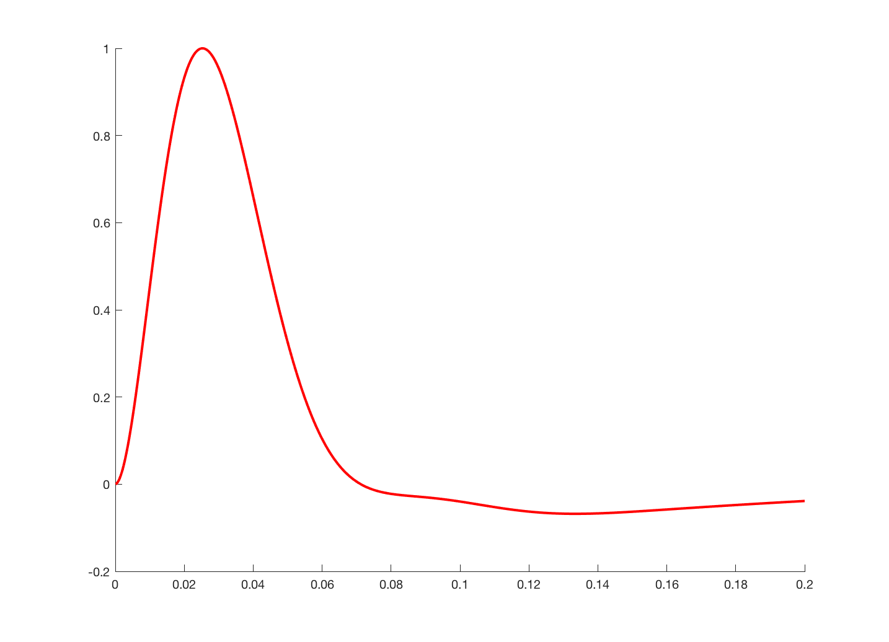
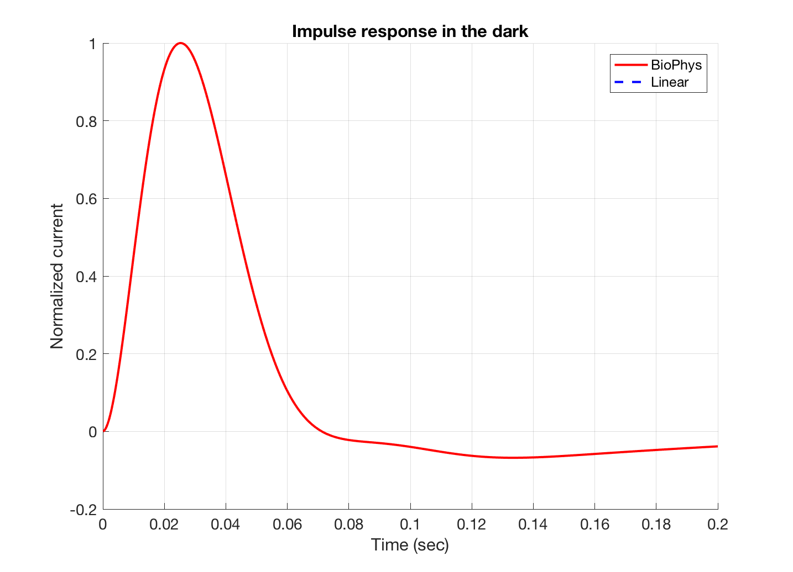

Contents
% t_coneMosaicFoveal % % Illustrates the difference between the foveal and peripheral cone outer % segment impulse responses using the osBioPhys object. % % A single cone is created, and its absorption time course is set to have an % impulse at the first time step. Biophysical outer segments are created, % one with foveal dynamics and one with peripheral dynamics. % % TODO @JRG % This script is a variation of v_osBioPhysObject, which should be deprecated. % In order to test the impulse response, we generate the cone mosaic and % directly set the photon absorptions. Instead, we should generate a scene % and an oi that produces the impulse stimulus in the conventional isetbio % processing pathway. % % 10/2016 JRG (c) isetbio team
Impluse stimulus
% Set up parameters for stimulus. nSamples = 2000; % 2000 samples timeStep = 1e-4; % time step flashIntens = 50000; % flash intensity in R*/cone/sec (maintained for 1 bin only) % Create stimulus. stimulus = zeros(nSamples, 1); stimulus(1) = flashIntens*timeStep; stimulus = reshape(stimulus, [1 1 nSamples]); % Generate the cone mosaics osCM = osBioPhys(); % peripheral (fast) cone dynamics osCM.set('noise flag','none'); cm = coneMosaic('os',osCM,'pattern', 2); % a single cone cm.integrationTime = timeStep; cm.os.timeStep = timeStep;
osBioPhys impulse response
% Set photon rates. This is a kluge that appeared % just for this test, and that should probably go % away again. This is an artifact of directly specifying the stimulus % in the cone mosaic, and will not be an issue when the absorptions % are the result of a sensorCompute command on a scene and oi. cm.absorptions = stimulus; % Compute outer segment currents. cm.computeCurrent(); currentScaled = (cm.current) - cm.current(1); % Plot the impulse responses for comparison. vcNewGraphWin; hold on tme = (1:nSamples)*timeStep; % plot(tme,squeeze(currentScaled),'r','LineWidth',2); plot(tme,squeeze(currentScaled./max(currentScaled(:))),'r','LineWidth',2);
osLinear impulse response
osCML = osLinear('osType',false); % linear cone dynamics osCML.set('noise flag','none'); cmL = coneMosaic('os',osCML,'pattern', 2); % a single cone cmL.integrationTime = timeStep; cmL.os.timeStep = timeStep; cmL.absorptions = stimulus; cmL.computeCurrent('linearized',true); currentScaledL = (cmL.current) - cmL.current(1); % vcNewGraphWin; % plot(tme,squeeze(currentScaledL),'--b','LineWidth',2); plot(tme,squeeze(currentScaledL./max(currentScaledL(:))),'--b','LineWidth',2);
No current noise added.
Plot details
grid on; % legend('Peripheral','Foveal'); % axis([0 0.2 min((current2Scaled./max(current2Scaled(:)))) 1]); xlabel('Time (sec)','FontSize',14); ylabel('Normalized current','FontSize',14); title('Impulse response in the dark','FontSize',16); set(gca,'fontsize',14); legend('BioPhys','Linear'); % legend('Biophysical','Linear (orig)');
foveal cone
% osCM2 = osBioPhys('osType',true); % foveal (slow) cone dynamics % osCM2.set('noise flag',0); % cm2 = coneMosaic('os',osCM2, 'pattern', 2); % a single cone % cm2.integrationTime = timeStep; % cm2.os.timeStep = timeStep; % % % Print out model paramters for peripheral and foveal dynamics % cm.os.model % peripheral % cm2.os.model % foveal % % cm2.absorptions = stimulus; % % cm2.computeCurrent(); % current2Scaled = (cm2.current) - cm2.current(1); % % % plot(tme,squeeze(current2Scaled),'g','LineWidth',2); % plot(tme,squeeze(current2Scaled./max(current2Scaled(:))),'g','LineWidth',2); % legend('BioPhys','Linear','Biophys Foveal');